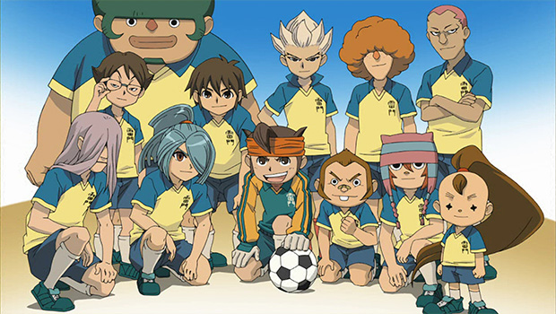

イナズマイレブン
あらすじ
弱小チームの雷門中サッカー部。7人しかいない部員は練習をせずサボリ気味だったが、
キャプテンの円堂守は中学サッカーの全国大会「フットボールフロンティア」への出場を
諦めずに練習を続けていた。そこに伝説のエースストライカー・豪炎寺修也が雷門中に
転校してくる。羨望の目でサッカー部に勧誘する円堂に、豪炎寺は「もうサッカーはやめた」
と言い放つ。そして時を同じくして、全国大会40年連覇の強豪・帝国学園サッカー部が雷門中
サッカー部に練習試合を申請してくるのだが、この試合に勝てなければサッカー部は廃部と
なることが決定してしまう。
